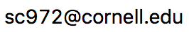
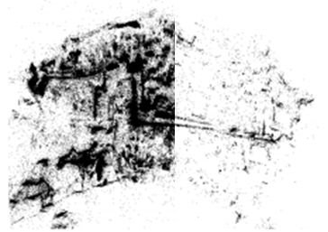
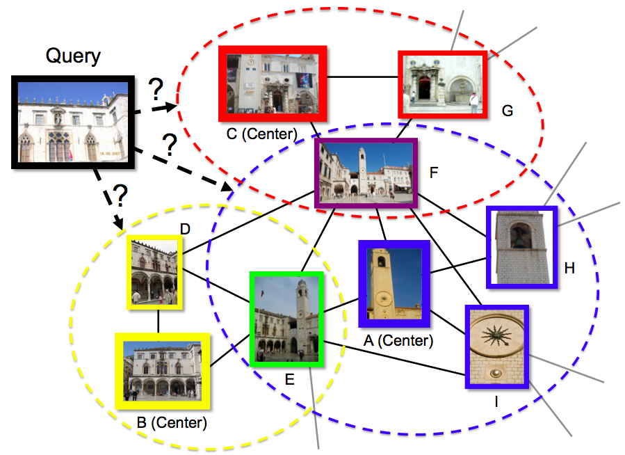
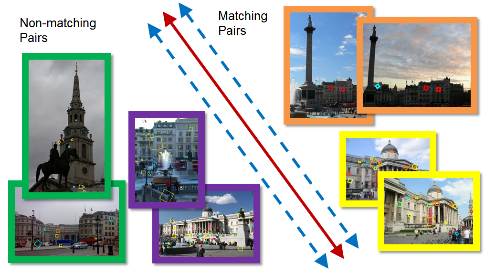
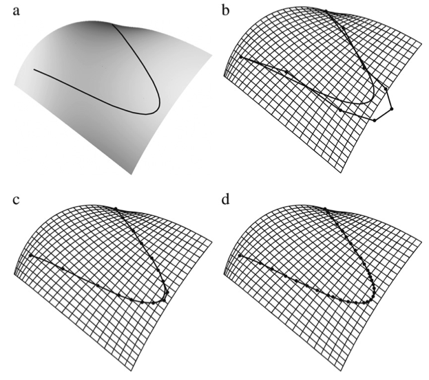

Song Cao |
||
| PhD Candidate Department of Computer Science Cornell University |
||
|  | ||
| Curriculum Vitae | ||
| Google Scholar Page | ||
Education
PhD in Computer Science
Department of Computer Science,
Cornell University,
January 2015, Ithaca, NY, USA
Bachelor of Engineering in Computer Software
School of
Software, Tsinghua
University, July 2008,
Beijing, China
Research
I’m currently working with Professor Noah Snavely on recovering 3D structure from large community photo collections for use in graphics and visualization. Specifically, I'm interested in developing techniques that enable better understanding and organization of large-scale Internet image collections. My general research interest lies in computer vision and applied machine learning.
Teaching
Teaching Assistant, CS 6670: Computer Vision, Department of Computer Science, Cornell University, Spring 2011.
Projects
|  |
Song Cao, Noah Snavely: Minimal Scene Descriptions from Structure from Motion Models. CVPR 2014. (Also presented at Scene Understanding Workshop - CVPR 2014, and won Best Poster Award.) |
|  |
Song Cao, Noah Snavely: Graph-Based Discriminative Learning for Location Recognition. CVPR 2013. IJCV 2014. (Also presented at Scene Understanding Workshop - CVPR 2013.) |
|  |
Song Cao, Noah Snavely: Learning to Match Images in Large-Scale Collections. Workshop on Web-scale Vision and Social Media, ECCV 2012. |
|  |
Yijun Yang, Song Cao, Junhai Yong, Hui Zhang, Jean-Claude Paul, Jiaguang Sun: Approximate computation of curves on B-spline surfaces. Computer-Aided Design, Volume 40, Issue 2, February 2008, Pages 223-234. [PDF] |